3.1. NetCracker Professional негізі
NetCracker Professional - жергілікті (бір және көп деңгейлі), сондай-ақ бөлінген желілерді жобалау және модельдеу құралы. Ол желілер моделін бірегей, динамикалық және көрнекі түрде ұсынады.
Бағдарлама әр түрлі өндірушілердің мыңдаған желілік құрылғылары бар деректер қорын қамтиды және өз құрылғыларын құруға және қорға қосуға мүмкіндік береді.
Drag-and-drop графикалық интерфейсі арнайы оқытусыз желілерді оңай жобалауға және жоспарлауға мүмкіндік береді.
NetCracker Professional модельдеу жүйесінің көмегімен мұндай міндеттерді шешу мүмкін: желінің топологиясы өзгерген кезде желінің өткізу қабілетінің тәуелділігін талдау, берілген топология мен жұмыс жүктемесі кезінде желінің максималды өткізу қабілетін қамтамасыз ету үшін желі хаттамаларының параметрлерін таңдау.
NetCracker Professional-да пайдаланушыға қарапайым дербес компьютерлерден бастап көпфункционалды машрутизаторлар мен спутниктік байланыс құралдарына дейін құрылғылардың типтерін ғана емес, сонымен қатар әр түрлі өндіруші фирмалардан осы құрылғылардың көптеген нақты модельдерін ұсынатын құрылғылар кітапханасы бар. Элементтер кітапханасы стандартты желілік құрылғыларды үлгілеуге, Пайдаланушының талаптарын қанағаттандыратын құрылғылар үлгілерін жасауға, кітапхана элементтерінің параметрлеу деңгейін реттеуге, модельдерді нақты объектілермен салыстыруға, модельделетін объектілер сыныптарының санын есепке алуға мүмкіндік береді.
Бағдарламаның ең қызықты және пайдалы функцияларының бірі анимация көмегімен Желі жұмысын көрнекі имитациялау болып табылады. Желі жобаланғаннан кейін, біз NetCracker Professional AutoSimulation функциясын және әртүрлі статистикалық хабарламаларды пайдалана отырып, трафик түрлерін және оның жұмысын тексере аламыз. Желі жұмысының имитациясы шағын жобалар жағдайында нақты уақыт режимінде болады.
Жоба жұмысының имитациясы барысында нақты параметрлерге барынша жақын параметрлермен бағдарлама әртүрлі статистикалық деректерді көрсетеді және жинақтайды, оларды имитациялау жұмысы аяқталғаннан кейін есеп түрінде қарауға және басып шығаруға болады.
Қосымша функциялар ретінде бағдарламада мынадай мүмкіндіктер іске асырылады:
- алынған деректер негізінде жаңа жобаны автоматты түрде жасай отырып, нақты желіні (Autodiscovery) және оның құрылғыларын (және оларды баптау параметрлерін) сканерлеу және тану;
- Microsoft Visio көмегімен жасалған жобаларды импорттау;
- құрылған жобаны графикалық файлға экспорттау;
- жобаның барлық жабдықтарының құнын және байланыс желілерінің ұзындығын автоматты түрде есептеу мүмкіндігі [11].
NetCracker Professional бағдарламасы көптерезелі интерфейске бағдарланған мультимедиялық бағдарламалық құралы болып табылады (сурет 3.1), жергілікті, корпоративтік, жаһандық (оның ішінде спутниктік сегменті бар) желілерінің, сондай-ақ телеарналар және ұялы желілер жұмысын модельдеуге мүмкіндік береді. Бағдарлама желіде пайдаланылатын жабдықтың үйлесімділігін тестілеуге, трафикті жүктеуге (трафик түрлері бойынша саралаумен), жергілікті ақауларды енгізген кезде желінің орнықтылығын талдауға мүмкіндік береді, т.б.
Сол жақтағы терезеде желіні құруға арналған құрылғылар түрлерінің тізімі орналасқан.
Төменгі терезеде тиісті түрдегі құрылғылар көрсетілген.
Оң жақ терезе желі жобасын құруға арналған.
Сурет 3.1.Бағдарламаның көптерезелі интерфейсі
Бағдарламаның жиынтық тақталары 3.2. суретте көрсетілген.
| Standard (Стандартты) | |
| 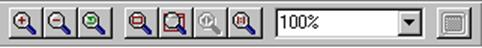 | Zoom (Масштабтау) |
| 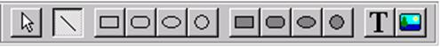 | Drawing (Графикалық суреттер) |
| 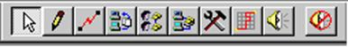 | Modes (Желіні модельдеу) |
| 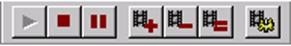 | Control (Басқару және бақылау) |
| 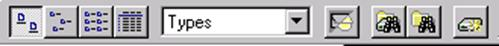 | Database (Мәліметтер қорымен жұмыс) |
Сурет 3.2. Жиынтық тақталары
Байланыс желісінің түсі байланыс желісінің түрін анықтайды (3.3 суретті қараңыз), әдепкі бойынша келесі мәндер қабылданған:
- қара - коаксиалды кабель;
- көк - сұр жұп;
- сары - оптикалық;
- қызыл - көп функциялы кабель;
- жасыл - радиоарна.
Сурет 3.3. Байланыс желісінің түсі
Төменде (3.1 - 3.6 кестелері) NetCracker бағдарламасының негізгі аспаптық мүмкіндіктері берілген [12].
Кесте 3.1. Файлдар мәзірі
| Функцияның атауы | Белгісі | Сипаттамасы |
| New | Жаңа жобаны ашу | |
| Open | Бар жобаны ашу | |
| Save | Жобаны файлға сақтау | |
| Жобаны басып шығару (желі топологиясы) |
Кесте 3.2. Өңдеу мәзірі
| Функцияның атауы | Белгісі | Сипаттамасы |
| Cut | 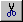 | Таңдалған желі нысанын қиып алу (құрылғы, байланыс, т. б.).) |
| Copy | Таңдалған нысанды көшіру | |
| Paste | Нысанды көрсетілген жерде қалпына келтіру |
Кесте 3.3. Көрсету мәзірі
| Функцияның атауы | Ішкі функциясы | Белгісі | Сипаттамасы |
| Zoom | Zoom in | Үлкейту | |
| Zoom out | Кішірейту | ||
| Zoom to page | Бет өлшемі бойынша өлшемі | ||
| Large icons | 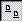 | Құрылғылар қорын ұсыну түрі | |
| Small icons | |||
| List | 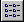 | ||
| Details | |||
| Full Screen | 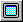 | Желі моделі-бүкіл экранда | |
| Hide Empty Folders | Құрылғы тобын (қалтасын) анықтау | ||
Кесте 3.4. Құрылғылар қорының мәзірі
| Функцияның атауы | Белгісі | Сипаттамасы |
| Find | 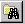 | Деректер қоры бойынша құрылғыны іздеу |
| Device Factory | 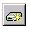 | Құрылғы қорына жаңа құрылғыны қосу |
Кесте 3.5. Аспаптық мәзір
| Функцияның атауы | Белгісі | Сипаттамасы |
| Standard | желі нысанын таңдау | |
| Link | екі желі нүктелерінің арасында физикалық байланыс орнату | |
| Set Traffic | 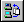 | екі желі нүктесі арасында желілік трафикті орнату |
| Set Voice Call | 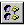 | екі желі нүктелерінің арасында телефон байланысының трафигін орнату |
| Set Data Call | 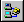 | деректерді беру трафигін орнату (факс, ...) екі нүкте арасындағы желі |
| Break/Restore | тиісті желі объектісіне (құрылғы, байланыс желісі) ақаулықты енгізу/жою, …) | |
| Trace Path | желі жұмысын модельдеу кезінде трафик сыйымдылығын көрсету |
Кесте 3.6. Бақылау мәзірі
| Функцияның атауы | Белгісі | Сипаттамасы |
| Start | Желі жұмысының модельдеуін бастау | |
| Stop | Желі жұмысының модельдеуін тоқтату | |
| Pause | Желі жұмысының модельдеуін кідірту | |
| Animation faster | Желі жұмысын жылдамдату | |
| Animation slower | 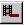 | Желі жұмысын баяулату |
| Set Animation Default | 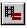 | Стандартты көрсету жылдамдығы |
3.4 суретте физикалық қосылыстар желі құрылғыларын орнату терезесі ұсынылған [13].
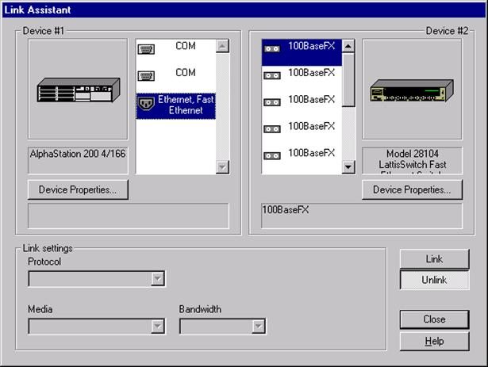
Сурет 3.4. Физикалық қосылыстарды орнату терезесі
Кері